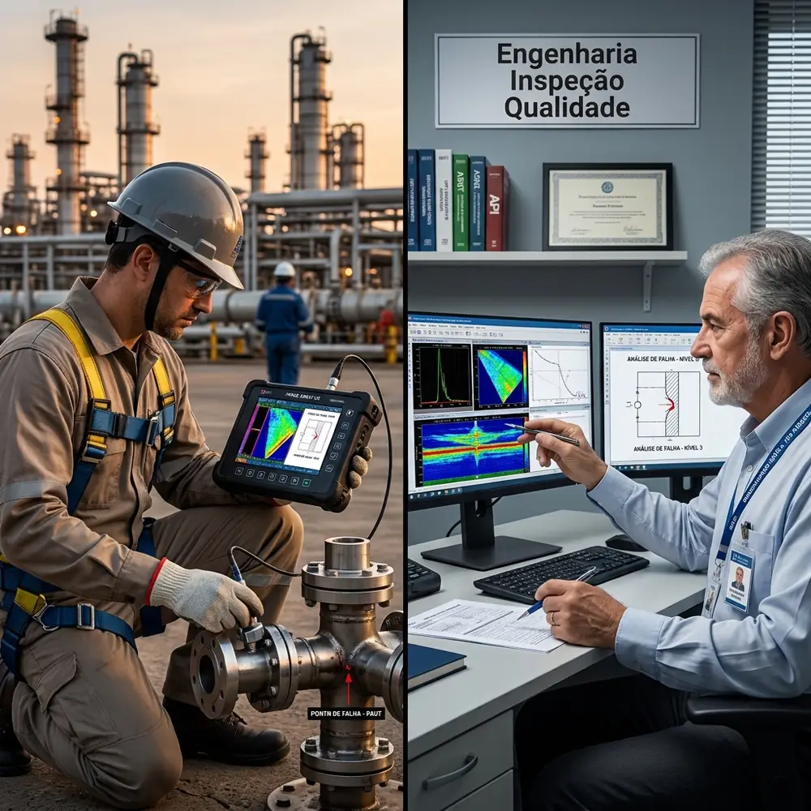
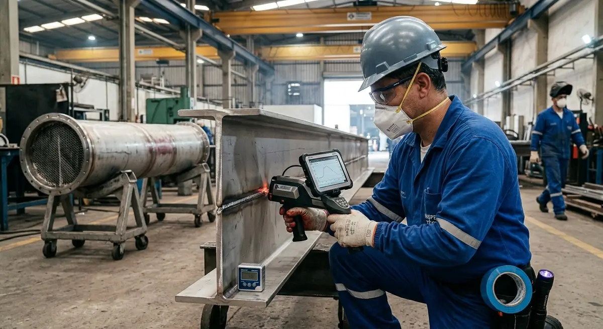
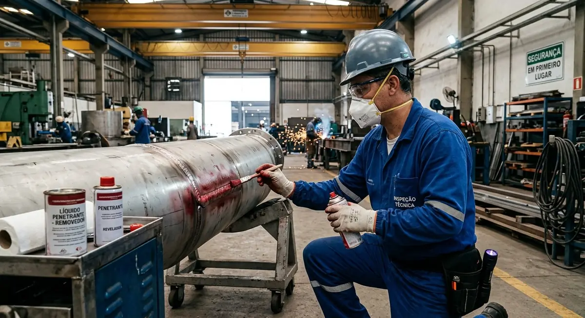

Para empresas de inspeção que atendem órgãos federais e estaduais
Software de laudos END para quem não pode errar em contrato público
Do ensaio em campo, mesmo sem internet, ao laudo emitido com número, código de integridade e QR Code de verificação. Cada etapa fica registrada, para sua empresa comprovar o que fez quando o fiscal perguntar.

- 16
- métodos de END em uma plataforma
- Offline
- coleta em campo sem internet
- SHA-256
- código de integridade em cada laudo
- QR Code
- verificação do documento emitido
A rotina de quem presta inspeção para o poder público
Ensaios não destrutivos em obras e instalações públicas têm uma característica própria: o trabalho é técnico, e a prestação de contas também.
-
O ensaio acontece longe do escritório
Em área industrial ou canteiro de obra o sinal falha, e a anotação ainda vai para o papel ou a planilha.
-
O laudo passa por muitas mãos
Inspetor, engenheiro responsável e gestor do contrato revisam arquivos que circulam por e-mail e aplicativo de mensagem.
-
O contrato cobra prova
Prazo, medição e fiscalização pedem documentos consistentes, com autor, data e versão bem definidos.
Onde o laudo de inspeção fica vulnerável
Quase sempre o risco não está no ensaio. Está no caminho entre a medição e o documento final.
Transcrição manual
Cada dado copiado do papel para o computador é uma chance de erro em espessura, TAG ou data.
Versão sem dono
Com vários arquivos em circulação, fica difícil provar qual laudo é o definitivo e quem aprovou.
Validades sem controle
Certificado de inspetor ou calibração de instrumento vencidos só aparecem quando alguém confere, muitas vezes tarde demais.
Medição de obra em planilha
O avanço contratado depende de consolidação manual, semana após semana, e de quem conhece a planilha.
Em contrato público, um laudo frágil custa muito mais que retrabalho
Vale fazer quatro perguntas sobre a operação da sua empresa hoje.
-
Medição travada
Sem evidência aceita pela fiscalização, o serviço executado pode não ser atestado no prazo.
Quantos dias de faturamento parado sua empresa suporta?
-
Questionamento da fiscalização
Fiscais e órgãos de controle podem pedir um documento muito depois da entrega do serviço.
Se o pedido chegar hoje, em quantos minutos sua equipe acha a versão original?
-
Exposição do responsável técnico
A assinatura do engenheiro responde pelo conteúdo do laudo, inclusive em inspeções ligadas à NR-13.
Ele consegue provar o que revisou, e quando?
-
Reputação na próxima licitação
Falhas de documentação desgastam a relação com o contratante e podem pesar em atestados futuros.
Quanto vale o próximo edital para a sua empresa?
E se cada laudo já nascesse pronto para ser auditado?
A AXOS Relatórios é a plataforma de laudos de inspeção que transforma essas perguntas em registro: quem fez, quem revisou, o que mudou e qual é a versão válida.
-
Coleta em campo sem internet
Medições e fotos ficam guardadas no aparelho e sobem sozinhas quando a conexão volta.
-
Revisão por outra pessoa
Quem inspecionou não aprova o próprio laudo, e toda devolução exige comentário registrado.
-
Laudo emitido não muda
Depois da emissão o documento fica imutável. Correção só por nova revisão numerada.
-
Verificação por QR Code
Cada laudo sai com código de integridade SHA-256 e QR Code para conferir o documento.
-
Validades conferidas no envio
O sistema barra laudo com qualificação do inspetor ou calibração vencidas na data do ensaio.
-
Trilha de auditoria
Cada ação fica registrada pelo sistema, em um histórico que não aceita edição.
Como funciona o software de laudos END, do campo à emissão
O inspetor registra em campo
Dados do ensaio, evidências e veredito, com ou sem conexão.
Os dados sincronizam sozinhos
Ao voltar a conexão, o laudo sobe para o servidor sem duplicar nada.
O engenheiro revisa e aprova
O Profissional Habilitado aprova ou devolve com comentário.
O laudo é emitido e verificável
Número definitivo, cabeçalho congelado e PDF com a marca da sua empresa.

16 métodos de ensaios não destrutivos em uma só plataforma
Dos ensaios convencionais às técnicas avançadas, toda a operação de END da sua empresa fica no mesmo padrão de laudo.
Ensaios convencionais
- Ensaio Visual VT
- Líquidos Penetrantes PT
- Partículas Magnéticas MT
- Ultrassom Convencional UT
- Radiografia Industrial RT
- Correntes Parasitas ET
- Ensaio de Estanqueidade LT
- Estanqueidade por Caixa de Vácuo LT
Ensaios avançados e especiais
- Ultrassom Phased Array PAUT
- Time of Flight Diffraction ToFD
- Radiografia Computadorizada e Digital CR/DR
- Eddy Current Array ECA
- Emissão Acústica EA
- Termografia Infravermelha IRT
- Alternating Current Field Measurement ACFM
- Total Focusing Method TFM/FMC

Medição de obra comprovada por laudo emitido
O avanço do contrato deixa de ser estimativa e passa a ser a soma do que foi inspecionado e emitido.
Só conta o que foi emitido
Rascunho não entra na conta, e revisões nunca somam em dobro.
Curva S e previsão de término
Previsto contra realizado, por método e por período, com ritmo das últimas semanas.
Aditivos com histórico
Toda mudança de escopo guarda quantidade anterior, nova quantidade e motivo.
Recurso dos planos Equipe.
Uma plataforma de laudos END para toda a equipe de inspeção
Para o inspetor em campo
Menos papel e nenhuma digitação dobrada. O laudo começa e avança no próprio local do ensaio.
Para o engenheiro responsável
Revisão organizada, com histórico de cada devolução e segurança sobre o que está sendo assinado.
Para a diretoria da empresa
Visão de prazos, pendências e avanço por obra, com documentos prontos para a fiscalização do contrato.
Valores do software de laudos END por número de inspetores
Escolha o plano pela quantidade de inspetores ativos da sua empresa. Valores mensais.
-
Individual
R$ 147 por mês
1 inspetor ativo
R$ 147,00 por inspetor
Falar conosco -
Equipe 3
R$ 397 por mês
Até 3 inspetores ativos
R$ 132,33 por inspetor
Falar conosco -
Recomendado
Equipe 5
R$ 597 por mês
Até 5 inspetores ativos
R$ 119,40 por inspetor
Falar conosco -
Equipe 10
R$ 997 por mês
Até 10 inspetores ativos
R$ 99,70 por inspetor
Falar conosco -
Acima de 10
Sob consulta
Mais de 10 inspetores ativos
Valor por inspetor a combinar
Falar conosco
O limite de cada plano considera os inspetores ativos, ou seja, os usuários com papel de inspetor.
Perguntas frequentes sobre laudos END
O que é um software de laudos END?
É um sistema que substitui papel e planilhas no registro de ensaios não destrutivos. A AXOS Relatórios cobre a coleta em campo, a revisão técnica, a emissão do laudo e a guarda do histórico em um só lugar.
A plataforma funciona sem internet?
Sim. O inspetor registra o ensaio no aparelho mesmo sem sinal. Quando a conexão volta, os dados sobem sozinhos para o servidor, sem duplicar registros.
Quais métodos de END a AXOS Relatórios atende?
São 16 métodos, entre convencionais e avançados, como ensaio visual, líquidos penetrantes, partículas magnéticas, ultrassom, radiografia, Phased Array, ToFD e termografia.
Como o contratante confere se o laudo é autêntico?
Cada laudo emitido sai com número definitivo, código de integridade SHA-256 e QR Code. O QR Code leva à verificação do documento e da revisão.
Um laudo pode ser alterado depois de emitido?
Não. O laudo emitido fica imutável. Se for preciso corrigir, a empresa cria uma nova revisão numerada, e a versão anterior continua preservada e identificada como substituída.
A plataforma serve para inspeções ligadas à NR-13?
Sim, ela organiza o registro dos ensaios e a revisão pelo Profissional Habilitado. A conclusão técnica e a responsabilidade pelo laudo continuam sendo do profissional que assina.
O sistema substitui as exigências do edital ou do contrato?
Não. Cada edital define suas próprias exigências. A AXOS Relatórios organiza a evidência e a rastreabilidade para que sua empresa atenda o que foi contratado com mais segurança.
O laudo sai com a marca da minha empresa?
Sim. O PDF traz logo, razão social, CNPJ e dados da empresa emissora, e o prefixo do número do laudo é configurável. Esses dados ficam congelados no momento da emissão.
Os dados de uma empresa ficam separados das demais?
Sim. Cada empresa acessa apenas os próprios dados, e o papel de cada usuário define o que ele pode ver e alterar.
Quanto custa a AXOS Relatórios?
Os planos mensais são Individual, com 1 inspetor ativo, por R$ 147; Equipe 3, por R$ 397; Equipe 5, por R$ 597; e Equipe 10, por R$ 997. Acima de 10 inspetores ativos, o valor é sob consulta.
Seu próximo laudo pode nascer pronto para a fiscalização
Veja o fluxo completo aplicado à realidade da sua empresa, do ensaio em campo ao documento verificável.